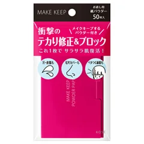

まず1つ（テカりだけ・デスクで直したい人）

コーセーコスメニエンス
メイク キープ オイルブロック 紙パウダー
50枚入・紙おしろい
¥495税込・出典掲載価格
選び方と声
- 選ぶ条件：小鼻やおでこのテカりを、トイレに行かずにデスクで直したい人
- あぶらとり紙にパウダーをコーティングした紙おしろい（メーカーの説明）。テカる所に当てて軽く押さえる
- 化粧直し用のパウダーを持ち歩かなくなった、前髪にも使える、という声
気になる声気になる点：普通のあぶらとり紙と変わらない・パウダー感が少ないという声、取り出すときに粉が舞う、乾燥するので夏だけ使うという声も
販売価格・容量・送料はリンク先でご確認ください